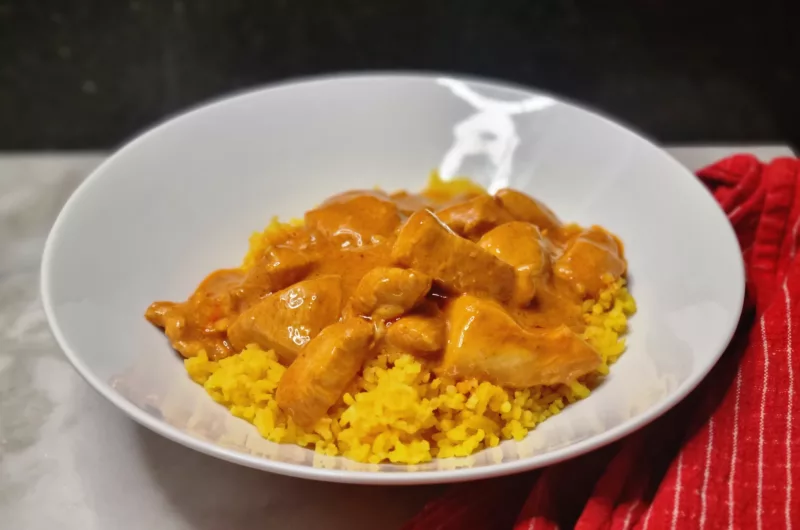

Kip tandoori

Het recept
- De benodigdheden
- 2 eetlepels tomatenpuree
- 2 tenen knoflook
- Een scheutje citroensap
- 1 eetlepels geraspte gember
- 1 eetlepels garam masala
- 2 theelepels ketoembar (korianderzaad)
- 1 theelepels komijnpoeder
- 1 theelepel chilivlokken
- 1 theelepel gerookte paprikapoeder
- 1 theelepel mosterdzaad (gemalen)
- 1 theelepel kardamom
- peper en zout
- 60 ml olie
- 600 gram kipfilet
- 150 milliliter Griekse yoghurt
- 150 gram gele rijst
- Meng alle ingrediënten voor de marinade goed samen.
Het is verstandig om dit in de keukenmachine te doen, zodat je een mooie gladde marinade krijgt en de kip alles goed kan opnemen.
- Snijd de kip in blokjes en voeg deze toe aan de helft van de marinade.
Zet de andere helft apart. Laat de kip zeker 4 uur marineren.
- Kook de rijst volgens de instructies op de verpakking.
- Verhit een pan en voeg de kip toe.
Je hebt hier geen extra olie voor nodig. Deze zit al in de marinade. Bak de kip goed gaar.
- Voeg de rest van de marinade en de yoghurt toe.
Verdun de saus met een klein beetje water tot het de gewenste dikte heeft.
- Schep eerst de rijst op het bord en schep de saus hier bovenop.
- Eetsmakelijk!
Variatietip
- Lekker met naanbrood
- Kan ook met Vega kip, marinade tijd is dan wel langer